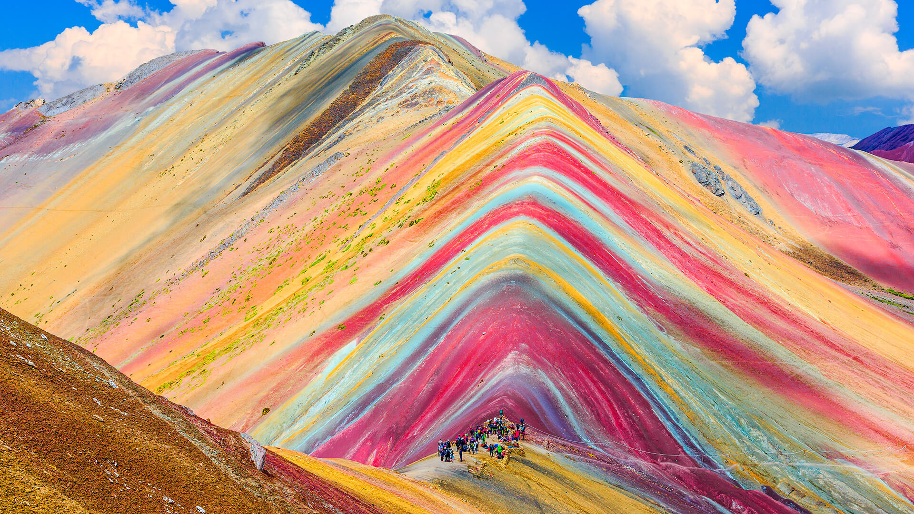
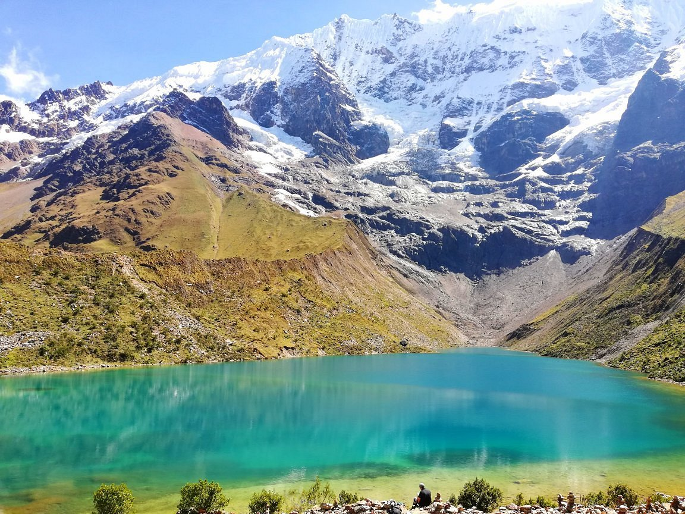
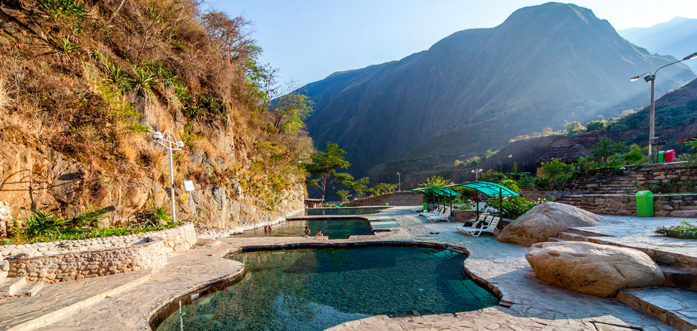
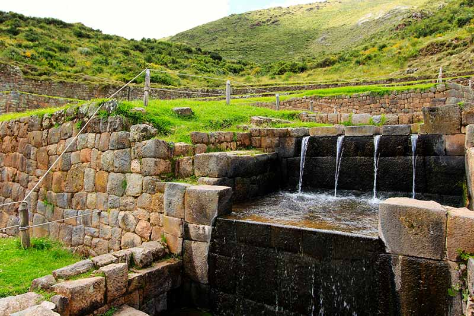
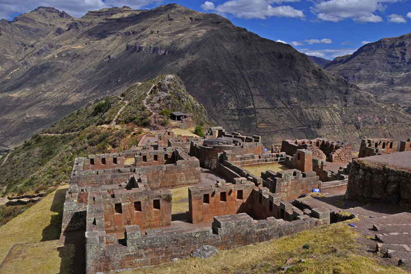

INICIO
CONTACTO
Lugares para visitar
Plaza de Armas
La Plaza de Armas es uno de los principales atractivos turísticos...
Ver más
Saqsayhuaman
Sacsayhuaman ofrece una asombrosa vista del Cusco...
Ver más
Moray
El conjunto de andenes que conforman Moray son visualmente bellos...
Ver más

Vinicunca
La montaña de los 7 Colores o también llamado Vinicunca es...
Ver más

Laguna Humantay
Humantay es considerada una de las más bellas y sagradas...
Ver más
Salineras de Maras
Las Salineras de Maras lo conforman más de 3 mil pozos de sal natural
Ver más
Ollantaytambo
Ollantaytambo es uno de los pueblos más importantes del Valle...
Ver más
MachuPicchu
Machu Picchu es una de las 7 maravillas del mundo moderno...
Ver más
Qorikancha
Posiblemente el edificio más sagrado e importante del imperio...
Ver más

Cocalmayo
Los baños termales de Cocalmayo parecen sacados de...
Ver más
Q'enqo
Q'enqo es famoso por sus túneles subterráneos...
Ver más

Tipón
Tipón fue una ciudadela y recinto inca destinado al...
Ver más
Chinchero
El parque arqueológico de Chinchero es uno de los principales...
Ver más

Pisac
Pisac es un pueblo del Cusco famoso por albergar el sitio...
Ver más
Tambomachay
Tambomachay es una de las mejores muestras de habilidad...
Ver más
Puka Pukara
Puca Pucara es un recinto arqueológico inca ubicado a las...
Ver más